Vidmer.dance
Сайт для лаборатории современной хореографии: направления, расписание, цены и запись в одном месте вместо переписки в директе
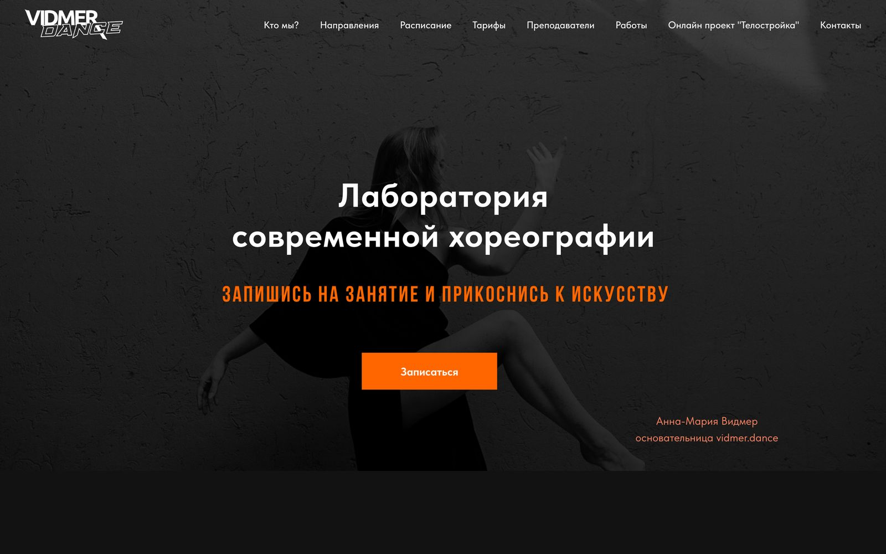
Расписание жило в директе
Всё про занятия студия рассказывала в Instagram и Telegram. За каждой деталью ученицы шли в личные сообщения.
Нужен был сайт, где новичок сам поймёт, что здесь танцуют, когда и сколько это стоит, и только потом напишет — уже чтобы записаться.
Страница отвечает на вопросы по порядку
Блоки идут в том порядке, в котором человек выбирает студию: что это за место, что здесь танцуют, когда, сколько стоит, кто ведёт и как добраться.
- 01Кто мыЛаборатория и её подход
- 02НаправленияПять стилей с фото
- 03РасписаниеПо дням недели
- 04ТарифыОт пробного до безлимита
- 05ПедагогиКто ведёт занятия
- 06КонтактыАдрес и телеграм
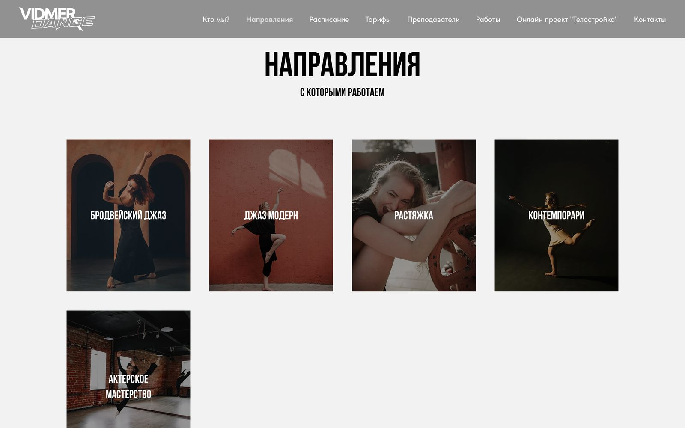
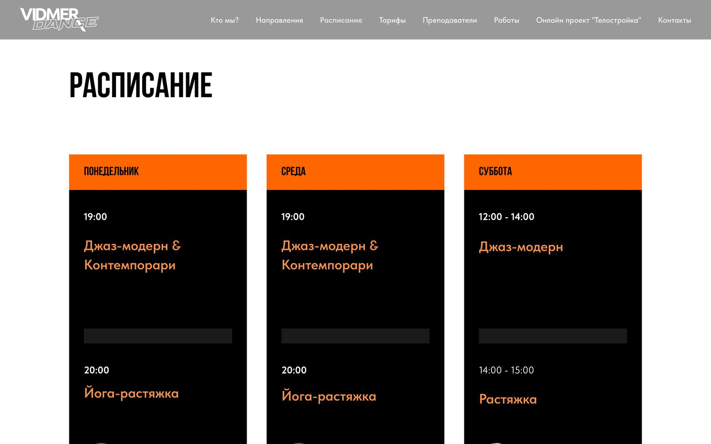
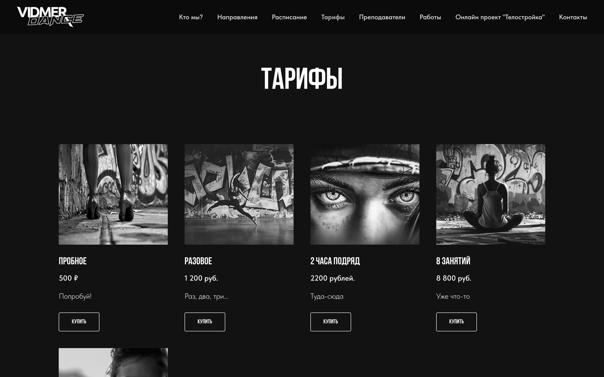
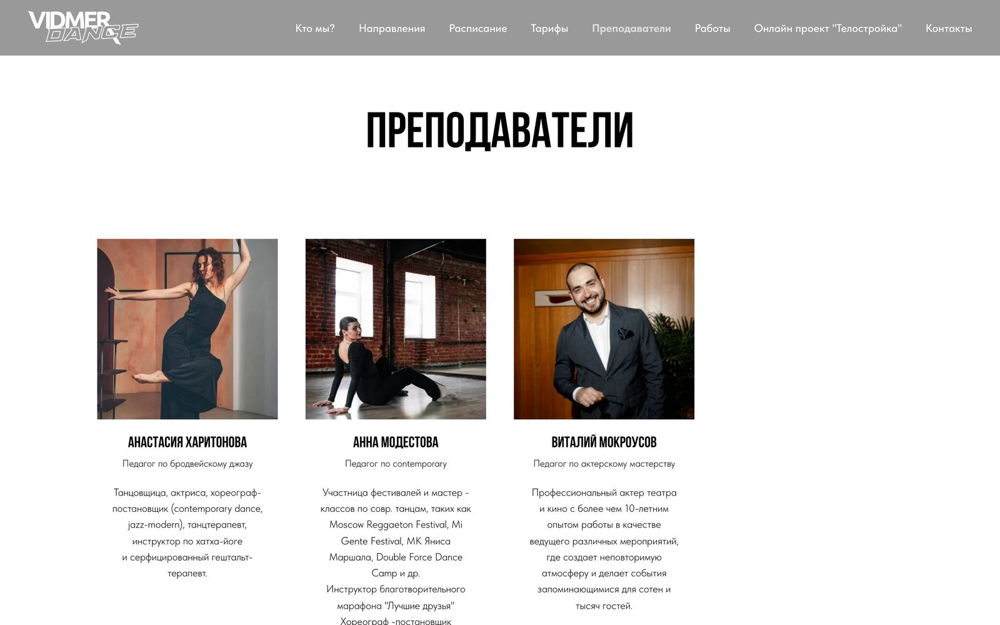
Сначала выбрать, потом написать
Направление
Пять стилей с фото — видно, чем джаз-модерн отличается от контемпорари
Расписание
Дни недели, время, название занятия и педагог в одной карточке
Запись в телеграм
Кнопка «Записаться» открывает телеграм студии — там, где ученицы и так общаются
Запись осталась в телеграме студии. Изменилось другое — человек пишет, уже зная, на какое занятие и когда хочет прийти.
Чёрный, белый и один оранжевый
Bebas — заголовки капсом
Tilda Sans — текст и кнопки
Основа страницы — чёрный и белый, монохромные фото на первом экране и в тарифах. Акцентный цвет один.
- Оранжевым выделено то, что ищут: дни недели, названия занятий, кнопки записи
- Узкие заголовки капсом держат ритм длинной страницы
- Чёрные и светлые блоки чередуются, чтобы разделы не сливались
С телефона — так же
Каждый блок собран под телефон отдельно: колонки встают друг под друга, кнопка записи остаётся на первом экране.
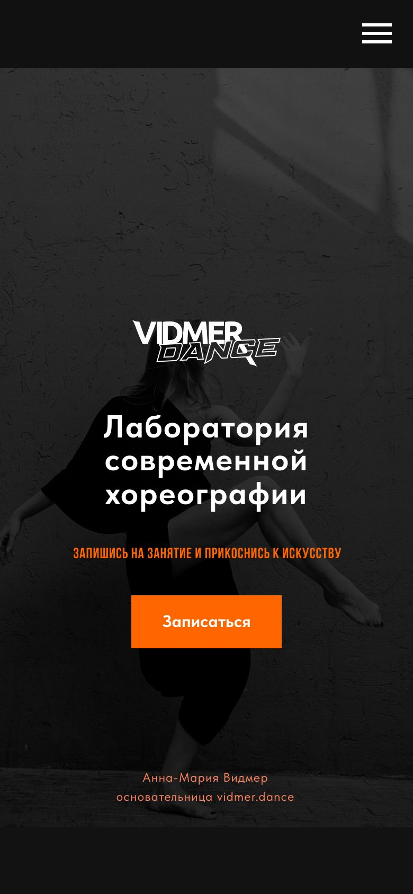
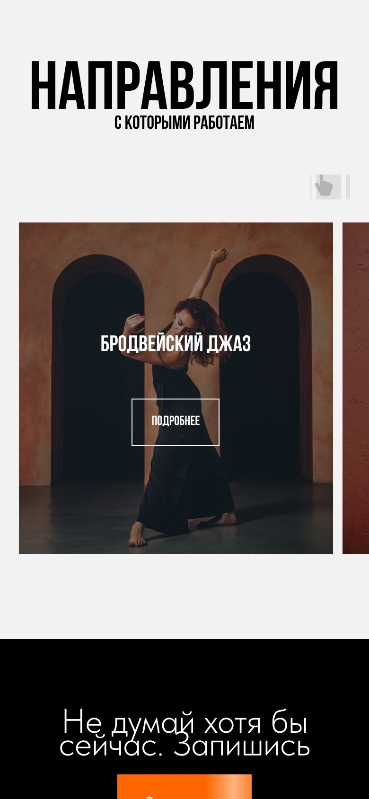
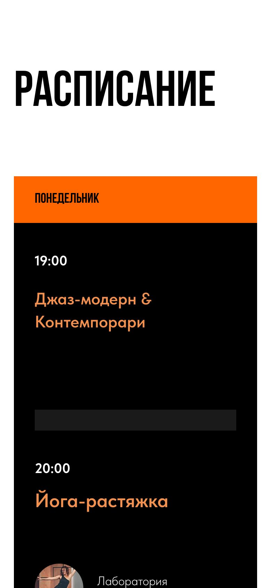
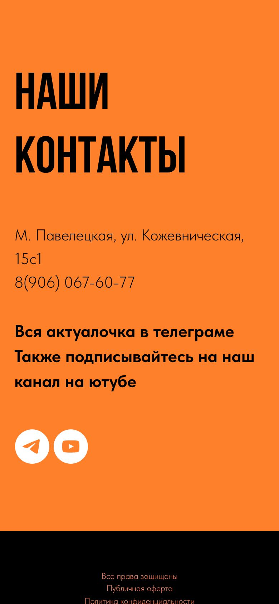
Расписание переехало на сайт
Ученицы открывают расписание и цены сами, в телеграм пишут уже, чтобы записаться
Несколько человек отдельно написали про внешний вид сайта
Как бы я сделала его сейчас
Через два года я пересобрала тот же сайт как концепт, без заказа студии. Начала не с визуала, а с вопроса: какой результат сайт должен давать студии? Новые ученицы на первом занятии. Под эту цель выстроены и структура, и экраны.
Студии нужны люди в зале, а не просмотры. Сайт ценен тем, сколько новых учениц он приводит на первое занятие.
Заявка без визита ничего не стоит, поэтому подтверждение и напоминание — тоже часть сайта.
Показывает, что сайт приводит своих людей, а не случайных.
Сейчас кнопка «Записаться» открывает телеграм студии. Сайт видит клик, но не знает, написал ли человек и записался ли. Главную метрику на текущем сайте не посчитать — это первое, что меняет концепт.
Где сейчас теряется человек на пути к первому занятию
Понять, подходит ли
СейчасНа первом экране название студии и кнопка. Не видно, можно ли прийти с нуля и сколько это стоит.
В концепте«Первое занятие — 500 ₽» и «с нуля и для профи» на первом экране, рядом видео постановки.
Выбрать класс
СейчасВ расписании нет уровня. Новичку непонятно, в какую группу идти.
В концептеПодбор за два вопроса, метки уровня у каждого класса и ближайший класс на первом экране.
Записаться
СейчасНужно перейти в телеграм и самой написать сообщение.
В концептеЗапись на конкретное время в три шага, без регистрации и предоплаты. Кнопка записи видна на каждом экране.
Прийти
СейчасНа сайте нет подсказок для первого визита.
В концептеБлок «Как пройдёт знакомство», после заявки — адрес, что взять и событие в календарь с напоминанием.
Остаться
СейчасТарифы идут списком, выгода абонемента не видна.
В концепте«8 занятий — 1 100 ₽ за класс» отмечено как выгоднее всего, а последний шаг знакомства — «решите после класса».
Первый экран отвечает новичку
Можно ли с нуля, сколько стоит и когда ближайшее занятие. Кнопка в карточке ближайшего класса записывает сразу на него.
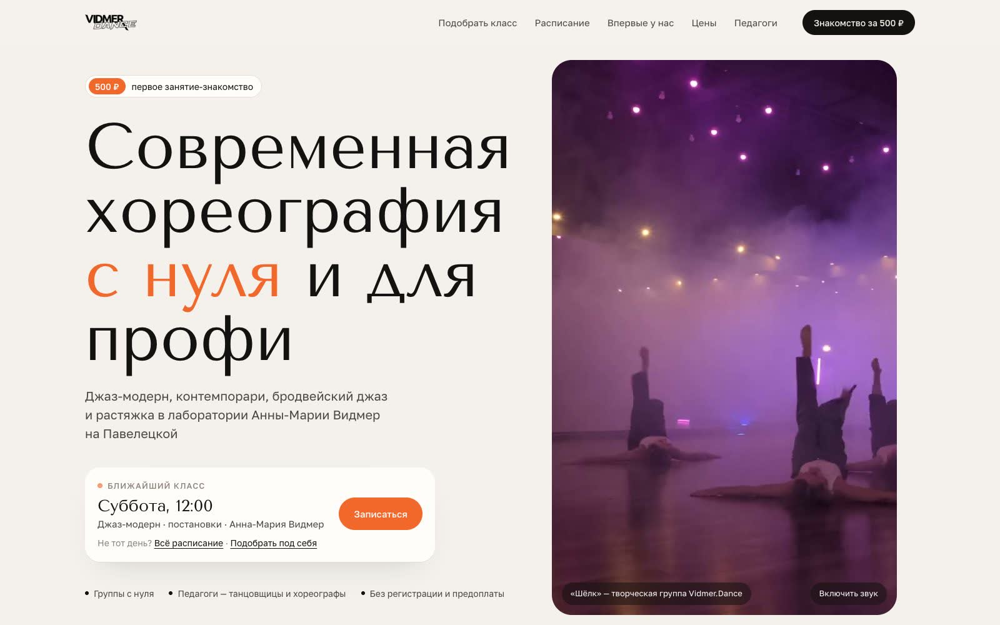
Подбор класса за два вопроса
Опыт и цель — и сайт показывает подходящий класс с ближайшим временем. Снимает главный страх новичка: попасть в слишком сложную группу.
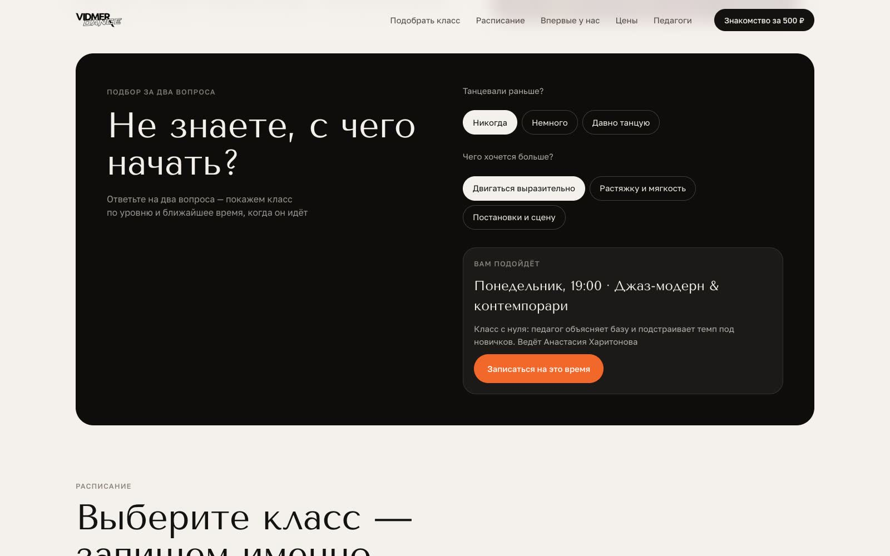
Расписание с уровнем и записью
У каждого класса уровень, педагог и своя кнопка «Записаться». Фильтр «С нуля» оставляет только то, что подходит новичку.
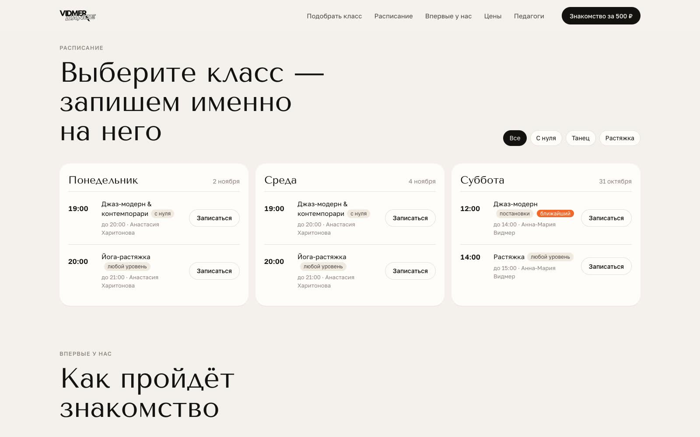
Запись в три шага
Класс, имя и контакт — без аккаунта и оплаты. После заявки: что взять, как найти студию и «Добавить в календарь» с напоминанием за три часа. Это работает на доходимость.
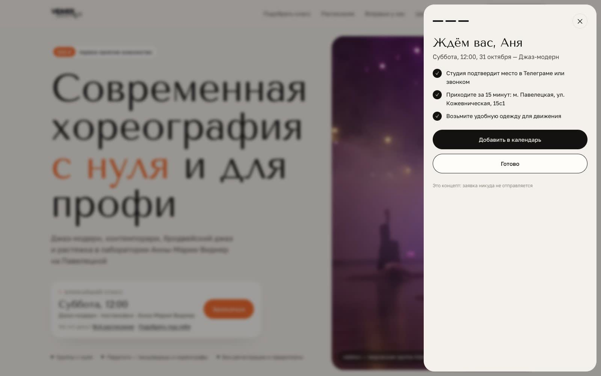
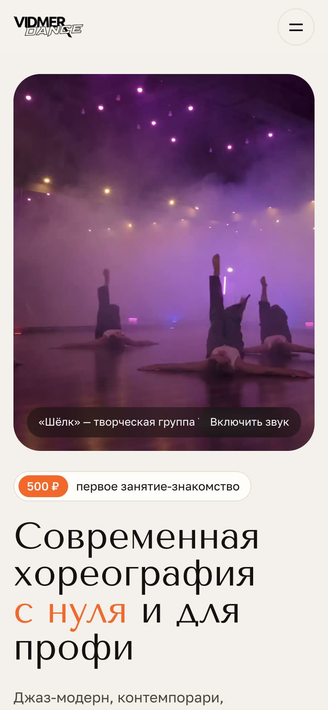
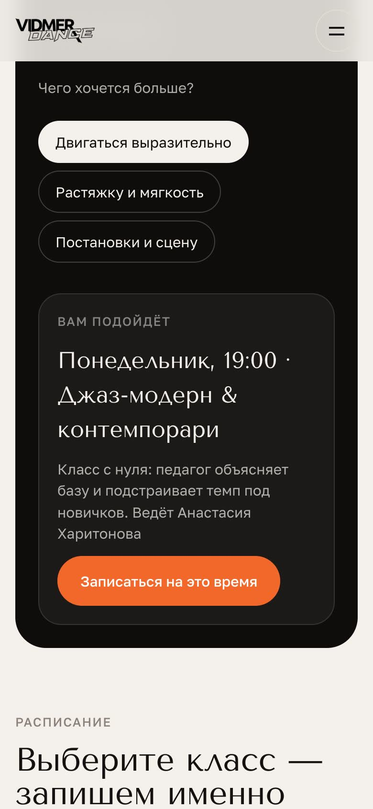
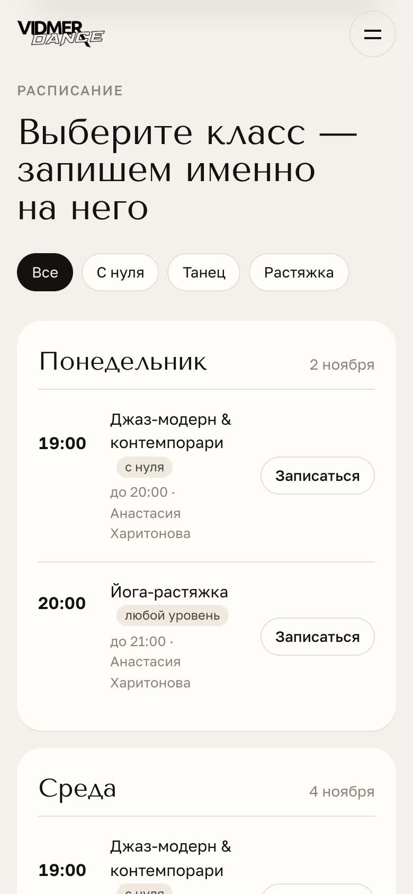
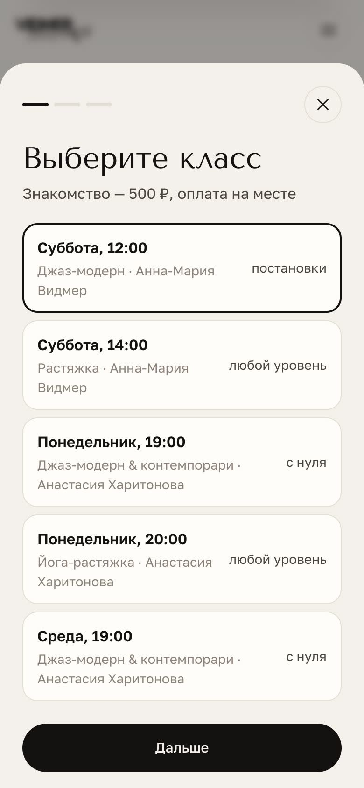
Как проверить, что это работает
visit→view_schedule→finder_result→booking_open→booking_submit→add_to_calendar→пришла на занятие→купила абонемент
Главная метрика — booking_submit, делённое на visit. Промежуточные события показывают, где уходят: если подбор проходят, но не записываются, проблема в расписании, а не в первом экране.
Последние два шага студия отмечает у себя в таблице. Сайт передаёт заявку с выбранным классом, поэтому визит и абонемент можно связать. Цифр здесь нет: концепт не запускали. Базой для сравнения станут клики на «Записаться» на текущем сайте за пару недель до запуска.